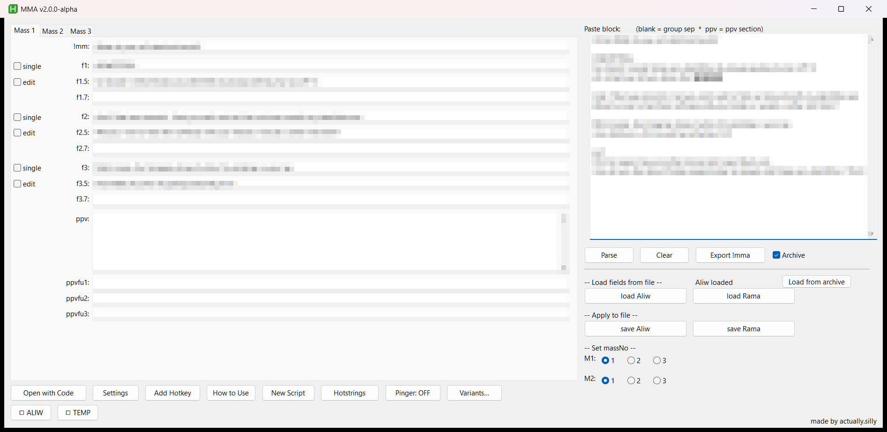
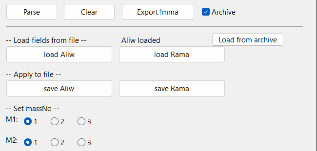
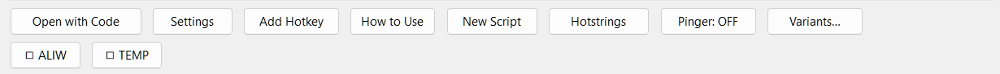
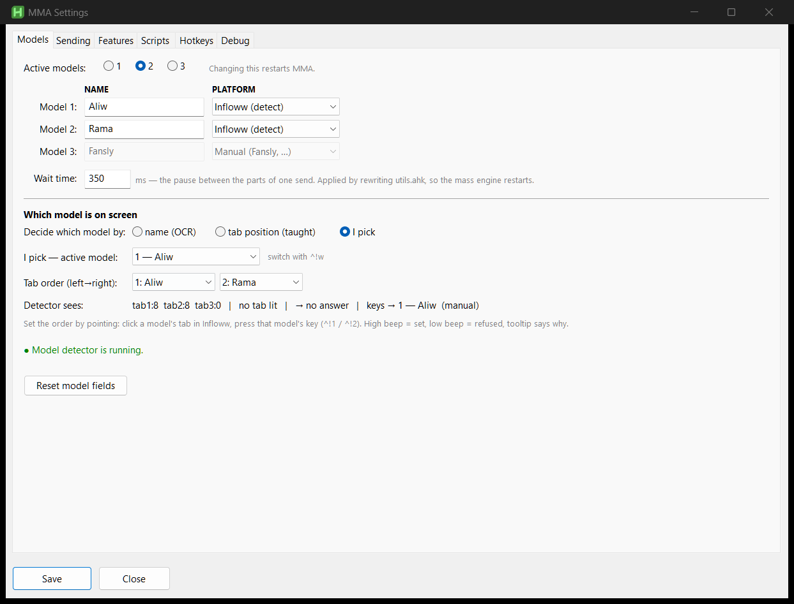

MMA
You know the job. This is where everything lives, and the handful of things that will waste your afternoon if nobody tells you.
The one architectural fact that matters. The window is just an editor. A separate background script — the mass engine — owns every hotkey and does all the sending. They share files, not memory, so a save takes effect on the next keypress with no restart. It also means if the engine is not running, no key works, no matter how good the fields look. MMA starts it and a watchdog restarts it every 5 s if it dies.
The window

Left is one mass in 14 fields, three tabs deep. Right is the workflow. Bottom is every other window plus one ◻ toggle per message script (◻ stopped, ◼ running).

| Control | What it actually does |
|---|---|
| Parse | Fills the tab you are looking at, clearing that tab's fields first. |
| Clear | Wipes the paste box and every field in all three tabs. Disk untouched — reload to recover. |
| Export !mma | Reverse of Parse: rebuilds paste text from the current tab. For handing a mass to someone. |
| Archive | Every Parse also appends the raw text to mass_archive.txt, and warns on likely duplicates. |
| Load from archive | Search past masses, preview, load one back into the fields. |
| load <model> | Disk → all three tabs. Discards what is on screen. |
| save <model> | All three tabs → disk, then nudges the engine. Read this first. |
| Set massNo | Which of the three masses that model sends. Applies instantly. Read this too. |

Add Hotkey appends a hotstring to a message file without opening an editor — trigger,
target file, send mode (snd() sends, SendText() types only,
Sendt() sends with a custom wait), :: vs :*:, one message
per line. The script restarts itself so the trigger is live immediately. The OCR variant
(Ctrl+Shift+O) lets you drag a box round text anywhere on
screen and opens the same form prefilled.
Every key
All of them live in userdata\hotkeys.ini, editable in Settings ▸ Hotkeys.
Changes apply live. ^ Ctrl · ! Alt · + Shift ·
# Win · blank = deliberately off. F13–F24 are Scimitar side
buttons 1–12.
Per model — never gated, always work
| Model 1 | Model 2 | Model 3 | |
|---|---|---|---|
| f1 / f2 / f3 | F1 F2 F3 | F9 F10 F11 | F6 F7 !F7 |
| f1–f3 second key | Ins Home PgUp | — | — |
| ppv / ppv f-ups | F4 F5 | F12 !F12 | F8 !F8 |
The key is the model selector. No detector, no mode, no gating — F1 sends model 1 whatever is on screen. These are the fallback when anything clever misbehaves.
Shared — follows whichever model is in front
| f1 / f2 / f3 | F13 F14 F15 · mouse: XButton2 XButton1 ^MButton |
| ppv / ppv f-ups | F16 F17 |
| paste the mass | F18 |
| next follow-up | Ctrl+XButton2 |
| pick active model | ^!1 ^!2 ^!3 · cycle ^!w |
Navigation and tools
| ^!m | Actions menu — search every action and its key. Use this instead of memorising the rest. |
| ^!q | Quick actions (pinned buttons) |
| !Space | Focus chat textbox, or top chat |
| Down / Up | Next chat down / focus top chat |
| !- / +Left | Mark unread & drag back / mark unread (left) |
| Del End PgDn | Click unread / home / PPV notification |
| ^+z | Recover last typed message |
| ^p | AFK click cycle |
| ^!u | Unsend last message — again for the whole run. python |
| ^!s | Total your sales in Notifications ▸ Purchases python |
| ^LButton | Discord: import the message under the cursor |
| ^+o | Add hotstring with OCR |
| ^!F12 | Coordinate recorder on/off |
Anti-fumble. A second send within 200 ms of the first is dropped, and any key pressed
while a send is still in flight is dropped — so a clumsy F1-then-F2 cannot
put two masses in one chat. Navigation keys are exempt. Tune with
DoubleFireWindowMs under [meta] in hotkeys.ini;
0 disables it.
If you open hotkeys.ini, ignore brPick, brFu2,
brFu3 and brPpv. Branches used to have four keys and their own
picker window; they ride the ordinary follow-up key now, so nothing claims those entries and
setting them does nothing.
Paste format
Three modes, picked automatically from what is in the paste. You never choose.
| Mode | Triggered by |
|---|---|
| keyword | a line starting with an exact field name (f2.5 …, ppvfu1 …) |
| prefixed | any line starting with f/fu + number |
| positional | neither — blank lines separate the groups |
Positional — what a Discord mass usually is
!mma opening message here ← optional; without it, line 1 is the mass
first follow-up ← f1
second part of it ← f1.5
second follow-up ← f2
third follow-up ← f3
ppv the caption ← group starting "ppv" → ppv
did you like it? ← ppvfu1 (group straight after the ppv)
want more? ← ppvfu2Within a group: line 1 → fN, line 2 → fN.5, line 3 →
fN.7. A fourth line is ignored. !mm !mma mm
mma are interchangeable, colon optional.
Prefixed — blank lines stop mattering
!mma opening message
f1 first follow-up
f1.5 second part
f2 second follow-up
ppv the captionf1 fu1 f1: fu 1 all identical.
Only .5 and .7 work today. f1.1 /
f1.2 / f1.3 match nothing and are silently dropped — no error,
no log line, the part is just not there. If a follow-up part vanishes after parsing, this is
why. known bug
Both spellings are supposed to work; it is written up in
development.md. Until it is fixed, use .5 and .7.
Comments, fences, alts, branches
-- this line is a comment "--" alone or "-- " + space
--BranchName no space = a BRANCH, not a comment
--- 3+ dashes = multiline-ppv fence
alt: another wording of this f-up each alt: line = its own alternative
alt0: part one of alt 1 numbered: same number = one multi-part alt
alt0: part two of alt 1A fence keeps a multi-paragraph PPV caption in one field instead of spilling into
ppvfu1: everything from the ppv marker up to the ---
becomes the caption, blank lines and all.
A branch is an alternate sequence, not just an alternate line — pick it at f1 and
f2/f3 open on it. Everything before the first --Name is the shared trunk; each
branch is laid out positionally exactly like the trunk. Max 3 branches, 3 alts per group.
A leading word: is stripped from message text (so pasted transcripts don't carry
their labels). URL schemes are exempt: http https ftp
ftps mailto tel file.
Footgun 1 — massNo
Each model holds three masses and sends one. The Set massNo radios pick which. Applies instantly, no save.
This is the number one cause of "my hotkeys stopped working." The keys are fine. massNo points at a slot you never filled, so the key sends an empty field, which sends nothing — silently, with nothing on screen to say so.
MMA now warns the moment you switch to an empty slot and logs it. If keys go quiet, check massNo before anything else.
Footgun 2 — load / save cover all three tabs
They are labelled per model, but each one moves all three tabs at once.
The way this bites: load Aliw → edit Mass 2 → click save Rama. You have just written Aliw's three masses into Rama, because the tabs still held Aliw's data.
Habit that avoids it: load a model, edit it, save that same model. One model start to finish.
Save while the engine is down and MMA says so explicitly rather than reporting success — the write worked, but nothing on the machine can send it.
single & edit
Two boxes in the gutter beside f1, f2, f3.
| off | on | scope | |
|---|---|---|---|
| single | parts go out as separate messages, wait time between | parts joined into one message with line breaks | per model and per group |
| edit | pasted and sent | pasted only, no Enter — change it before it goes | per group, all models |
edit applies immediately without a save. Wallet check before FU3 in Settings is the same mechanism aimed at f3.
Which model is on screen
Only matters for the shared key set. Three ways, in Settings ▸ Models:

| Mode | How | Costs you |
|---|---|---|
| name (OCR) | OCRs the model name off the Infloww tab. | Survives reordering tabs. Depends on names matching across Infloww/Discord/MMA, which
they often don't — map them in [ActiveMap] / [ModelAliases]. |
| tab position | Uses where the lit tab sits. Teach it: click a tab, press that model's ^!N. High beep = set, low = refused. | No names, no OCR. Trusts tab order — reorder and you re-teach. |
| I pick | ^!1/^!2/^!3, remembered until you say otherwise. Reads no pixels. | Can't notice you switching tabs. The confirmation tooltip is the safety net. |
Why "I pick" exists. Screen detection doesn't fail by going quiet — it fails by reporting the wrong tab confidently, and then a shared key sends one model's message to another model's fan. With no answer at all the shared keys deliberately do nothing rather than guess. If detection isn't solid on your screen, use I pick or the numbered keys.
Read Detector sees: top to bottom when it's wrong — no lit tab is a
colour/region problem; a wrong tab number is geometry (TabOrigin/
TabPitch); a right number pointing at the wrong model is your tab order.
Platform per model: set manual for a model MMA can't see (Fansly), and
"detector saw nothing" resolves to that model instead of nothing.
Tab-staging — alts and branches
One key, one list. Press the follow-up key as normal:
- No alternatives → it sends. Nothing appears.
- Alternatives → all of them are pasted into the chat box with
▸marking one. Tab moves the marker · Enter sends the marked one · Esc cancels and clears the box.
You read the options in the real chat box, at the real width, with nothing stealing focus.
Picking a branch variant is remembered for that conversation, so f2/f3 open on it; picking
main at f2 returns you to the trunk.
If Enter "stops working" in a chat, a choice is still staged. Tab/Enter/Esc are captured while it is — scoped to that window only. Press Esc, or wait 45 s for it to release on its own.
Edit variants in Variants…, or write them in the paste. Separators are configurable in
mass_gui.cfg [Settings] — with \n, \t, \s
escapes (\s is needed because ini reads strip edge spaces):
AltStageVariantSep | between variants | \n\n (blank line) |
AltStagePartSep | between parts of one variant | \s\s|\s\s → | |
AltStageMarker | marks the staged variant | ▸ |
Don't put a / in AltStagePartSep. The staged preview is
pasted into the Infloww composer, and / is Infloww's command trigger — it opens the
slash-command menu over the box, which then swallows the Tab and Enter the
picker runs on. The picker looks frozen, and the wrong variant goes out once you escape it.
It used to default to / for exactly this reason-shaped bug. If your config still
has the old value, MMA rewrites it to | once, automatically — but it leaves a
separator you chose alone, so if you set one containing a slash, that's on you.
Same rule for anything else you put here: it has to be inert in a chat composer.
Next follow-up
Ctrl+XButton2. OCRs the conversation, finds the last follow-up already in it, sends the one after. Right per chat and per model with nothing to remember, and it skips gaps — on a mass with no f2, "last seen f1" sends f3 and says so.
It refuses in two cases, both deliberate:
- No follow-up found and the mass isn't on screen. Ambiguous — you're scrolled up, or this fan never got the mass. Sending f1 would repeat a message or open with "did you see what I sent?" to someone who got nothing.
- The last follow-up the mass has is already there. Wrapping to f1 would re-send.
Both beep low and tooltip which it was.
Region is set in Settings ▸ Sending. A wrong region can't announce itself — it just never finds a follow-up and always sends f1. Tune it there, or run the Next follow-up probe in Settings ▸ Debug to see exactly what it reads.
Settings — six tabs
Every setting has exactly one control in one place. Where a tab shows state another tab owns, it's greyed and points at the owner.
| Tab | Holds |
|---|---|
| Models | Model count, names, per-model platform, wait time, the three detection modes, tab order, the live detector readout. |
| Sending | Open-new-tab after FU2/FU3/PPV · wallet check before FU3 · double-MM (session only, not saved) · Default FU3 text · Next-follow-up region and OCR settings. |
| Features | Easy/Advanced and every feature switch. Below. |
| Scripts | Which file Add Hotkey targets · visible scripts · run-on-startup · watchdog · read-only service status · Wipe TEMP.ahk · Check update. |
| Hotkeys | Every action, its key, its owning script. Click a row, press the key. Conflict report at the bottom — it's trustworthy, so silence means you're fine. |
| Debug | Logging switches, probes, self-tests, diagnostic report. Below. |
The mass engine and sequences.ahk are deliberately not in the
run-on-startup list. Both own hotkeys, and a box you can untick is a box that gets unticked —
which is exactly how "every mass key went dead" and "the Discord import broke again" both
happened. They start unconditionally; their real switches are in Features.
Easy / Advanced
Easy is MMA as of v1.4.0 — paste, parse, tabs, script toggles, basic settings. Advanced is everything, each switchable alone.
Easy doesn't hide the extras, it switches them off — hotkeys never register, services never start. A hidden feature that still runs can still surprise you. Your individual choices are remembered; flip back and every box is where you left it.
Features by section — Sending: alts & branches · editable f-ups / wallet check · default FU3 · next follow-up · open in new tab · double-MM · FuSingle grid · mouse f-ups. Library: archive · hotstrings manager · fast-parse autosave. Tools: actions menu · quick actions · recorder · auto-capitalize · sequences & Discord import · OCR hotstring. Background: model detector · stats overlay · automation · pinger · auto-start & watchdog · startup update check.
Hotstrings
Canned messages live in plain files: content\general.ahk (shared, always
running) and one per account in content\accounts\.
:*:_gns1::{
snd("your message here")
}With ~117 of them the problem is recall, so the Hotstrings manager searches the message text as well as the trigger — find one by half-remembering a phrase. From there: jump to source, delete, or make it an overload.
Overloads give one trigger several variants without rewriting your message files — the trigger is re-pointed at a picker when the script loads. Per trigger: ask (chooser, click a row or press 1–9, Esc cancels) or random.
Actions menu
^!m. Searchable list of every action and its key. Type to filter, Enter to run. Two things make it worth the muscle memory:
- It runs actions with no key bound — otherwise unreachable without editing the ini.
- It's generated from the registry, so it can't go stale.
Other scripts are suspended while it's open (so typing can't fire a hotstring), and focus returns to your chat before the action runs.
Discord import
Ctrl+click a message in Discord. MMA copies it, reads the channel name to decide which model it's for, and hands it to the window, which parses it into that model's tab.
#aliw-staff-chat → aliw → the Aliw model. Unrecognised channel →
a prompt asks which model and remembers, so the next one is automatic. Aliases live in
mass_gui.cfg [ModelAliases] as name=slot — the same table name-based
detection uses.
Background services
| Service | Does | Needs |
|---|---|---|
| Model detector | Reports which model's tab is in front, for the shared keys. | — |
| Stats overlay | Always-on-top Sales + PPV-sent/Fans-chatted ratio, red→green. Reads the Infloww Home window in the background without stealing focus. Right-click to calibrate or park. Toggle key configurable. | — |
| Automation listener | Serves ^!u unsend, ^!s count sales, ^!k hop kebabs. | Python |
| Unread pinger | Beeps when a fan tab goes unread. | Python |
| Recorder | ^!F12. Records clicks into a named sequence and writes
it into sequences.ahk ready to bind. | — |
All switched in Features. No Python → the two Python services just don't start, and MMA says so once instead of erroring every launch.
Logs
Settings ▸ Debug. MMA is up to eight cooperating processes; this is how you find out which one went quiet.
| Switch | Default | Does |
|---|---|---|
| Write a log file | on | Every process appends to
debuglogs\mma.log — what it did, and every point where it deliberately did nothing. |
| Report errors with a pop-up | off | A failure also raises a dialog carrying the last 20 log lines. The "debug someone else's machine" switch — they can screenshot it. |
| Max logging | off | The full firehose: every feature gate, every setting read, every branch. |
They apply everywhere within a second or two — no save, no restart.
21:42:26 BOOT engine.ahk 11244 lifecycle start ahk=2.0.26 …
21:42:31 DEVL engine.ahk 11244 mass.fu2 devlog: DoFu2 entered
21:42:31 BAIL engine.ahk 11244 send.fu model 2 follow-up 2 is EMPTY …How to read it. "Nothing happened" has exactly two causes and one grep separates them:
DEVLline present, no send → the code ran and chose to stop. TheBAILright after says why.- No
DEVLline at all → it never ran. Key unbound, feature off, engine down, or the press was debounced. Thehk.*lines say which.
Levels: BOOT/EXIT (process start/stop, with reason) ·
DEVL (it fired) · INFO · BAIL (deliberately did nothing,
and why) · WARN · FAIL/CRSH (with stack).
Buttons: open mma.log · Error log (failures only, short) ·
Mark log (press before and after a repro — only the lines between matter) ·
Diagnostic report (the file to send: environment, both config files, last 400 log
lines; masses and message text excluded) · Clear logs · probes · self-tests.
For a machine you can't open Settings on: set MMA_DEBUG=max (or
popups / off) in the environment and launch. It overrides all three,
and the checkboxes grey out and say so.
Symptom → cause
| Symptom | Check in this order |
|---|---|
| A mass key does nothing | 1. massNo — pointing at a slot with text in it? 2. Engine running? Settings ▸ Debug shows engine ●.3. Is that follow-up filled in for that model? Sparse masses are normal. 4. Easy mode, or that feature off? 5. Settings ▸ Hotkeys — key assigned, no clash? |
| Shared keys (F13+) dead | MMA has no answer for which model is on screen and refuses to guess. Fix detection, switch to I pick, or use numbered keys. |
| Wrong model's message went out | Detection read the wrong tab. Switch to I pick now, then check Detector sees:. |
| A follow-up part is missing | You wrote f1.1 instead of f1.5. Known bug. |
| Parsed into the wrong tab | Parse fills the tab you're on. Switch and re-parse. |
| Saved, didn't take | load/save move all three tabs. One model start to finish. |
| Discord import stopped | Almost always the script not running or the key unbound, not the import logic.
Check sequences in Features, then the key. |
| The wrong text went out | Grep the log for a FAIL on the clipboard — if the clipboard didn't
take the text, Ctrl+V pastes whatever was there before. MMA records that now. |
| Enter dead in chat | A staged choice still holds it. Esc, or wait 45 s. |
| Everything dead | A script may be suspended, or hotkeys.ini missing. Grep the log for
hk.suspend and hk.init. |
Files
MMA.ahk the only thing you double-click
content\ YOURS — hand-written messages, never overwritten
general.ahk shared hotstrings, always running
accounts\ one per account; TEMP.ahk is the scratch file
userdata\ YOURS — settings and masses
masses.json every mass, every model
hotkeys.ini every key
mass_gui.cfg every setting
mass_archive.txt the archive
debuglogs\ throwaway
mma.log · error_log.txt · diagnostic_report.txt
src\ the app — replaced by updatesBack up userdata\ and content\. That's everything you've
written. Updates skip them deliberately, but nothing protects them from a mistake.
Don't rearrange the tree — parts of MMA find each other by path. New account files go in
content\accounts\; use New Script and it lands correctly with the right
header.
MMA — made by actually.silly · internals in ARCHITECTURE.md ·
paste format alone in docs/mass-format.md